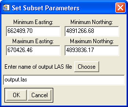

Using "Subset LAS File(s) via Coordinates"
This tool is meant to subset LAS format LiDAR data using input coordinates.

Usage:
- Select the input file(s) to subset. Multiple files can be selected if the subset area covers more than a single file.
- Input the geographic extents of the subset area. The default values are the overall extents of the selected input file(s).
- Select the output file.
Back to LidarTools home page.
Notes:
- This tool requires data that are in the LAS format.
- The subset data are saved to a single file, even if multiple input files are selected.
- Because the data are saved to a single file, this tool can also be used to combine multiple LAS files. Simply leave the geographic extents as the default values.
Comments?
• Idaho State University • Boise Center Aerospace Laboratory • 322 E. Front Street #240 • Boise, Idaho • 83702 •